Archive / Group exhibition
Disquiet — Off You
- When
- 2017
- Venue
- Town Hall Underground
- Presented by
- Constance ARI for Dark Mofo
- Curator
- Stephanie Han
Exhibition overview
But I’m going strange.
—The Breeders
Curated by Stephanie Han for DARK MOFO 2017, presented as part of Mona Museums annual Winter festival. Nipaluna, Lutruwita / Hobart Tasmania
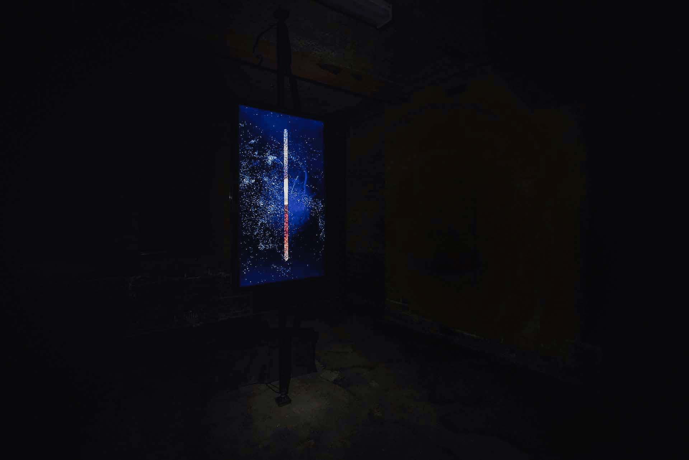
Exhibition statement
Venture underground to a space of silent foreboding.
Venture underground to a space of silent foreboding, where six artists will disrupt our expectations of the modern world.
Artists:
The Ryan Sisters (VIC, AUS)
Natalie Ryan (VIC, AUS)
Andy Hutson (TAS, AUS)
Eva Nilson (TAS, AUS)
Jon Butt (VIC, AUS)
Joseph Ray Shrimpton (TAS, AUS).
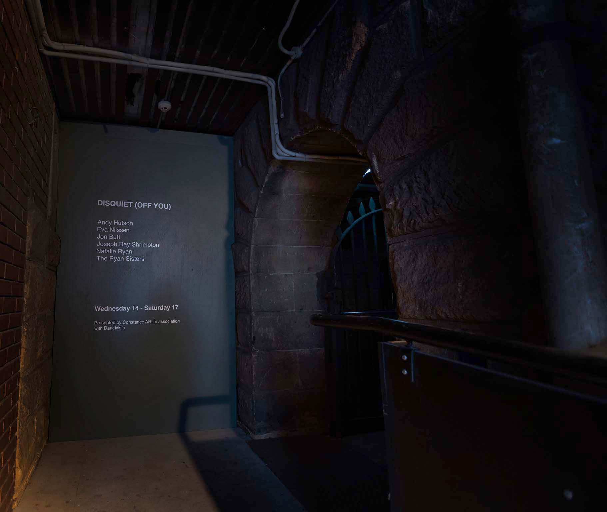
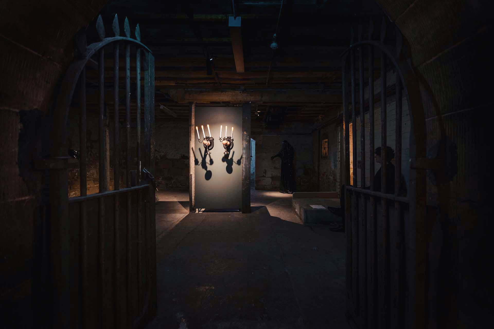
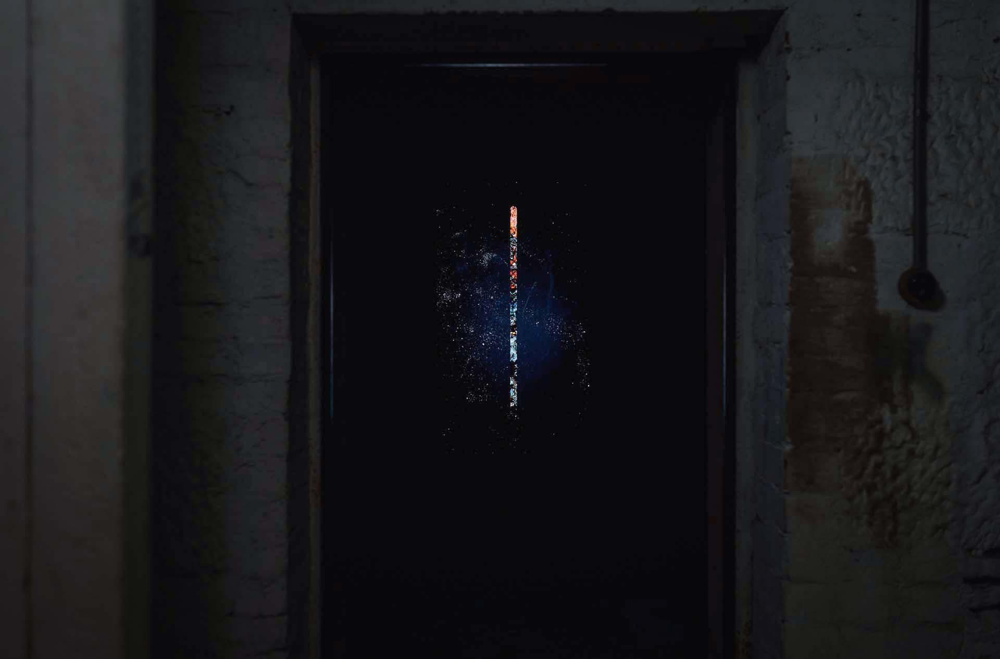
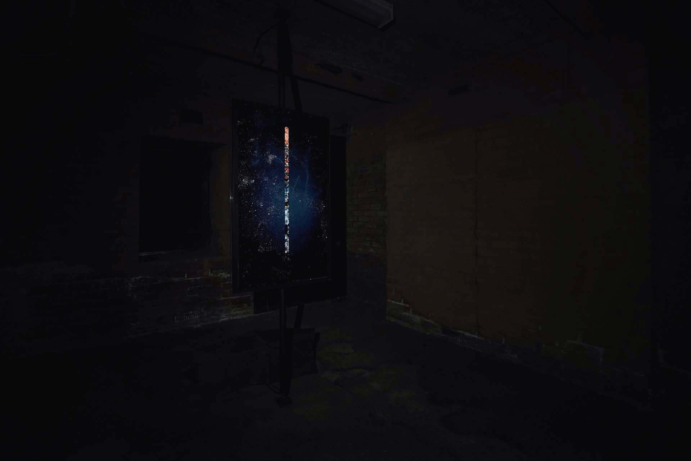
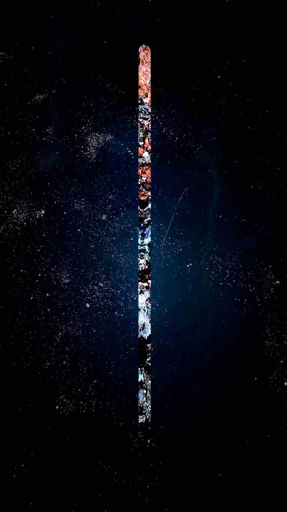
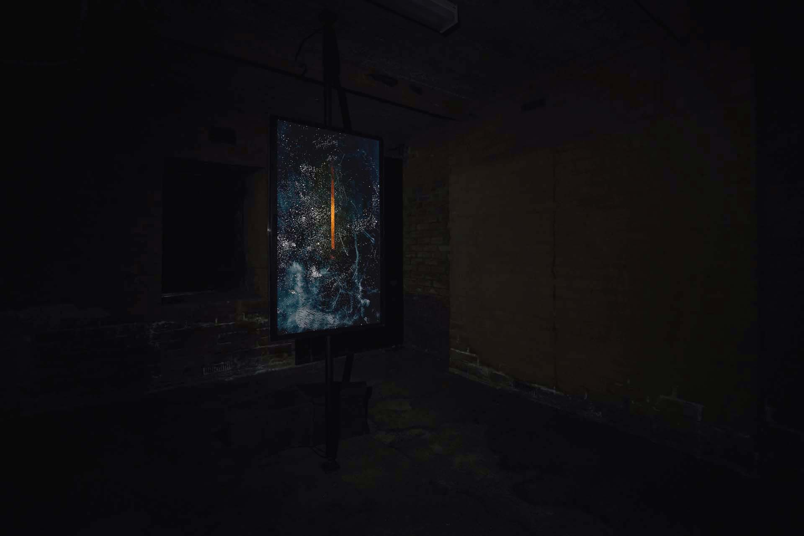
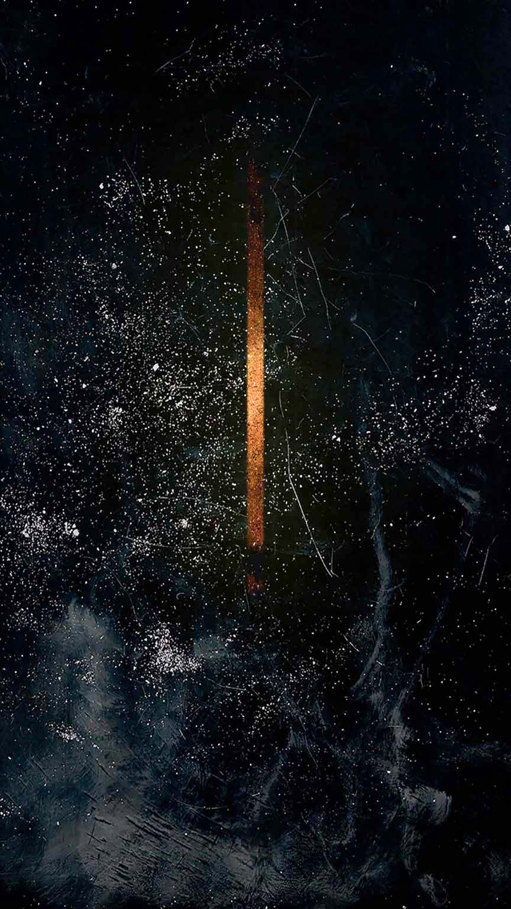

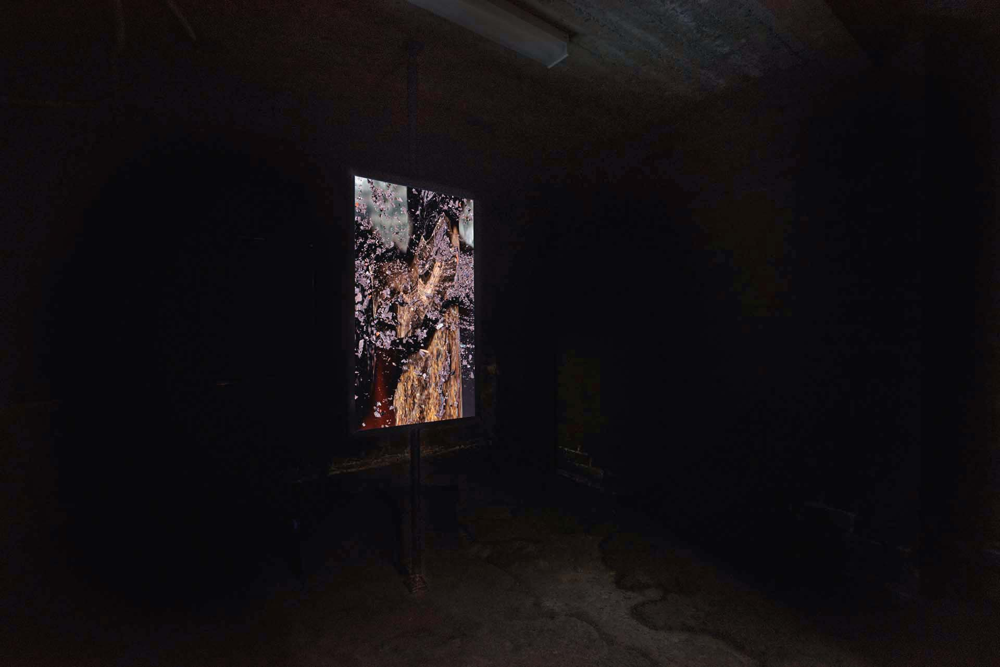
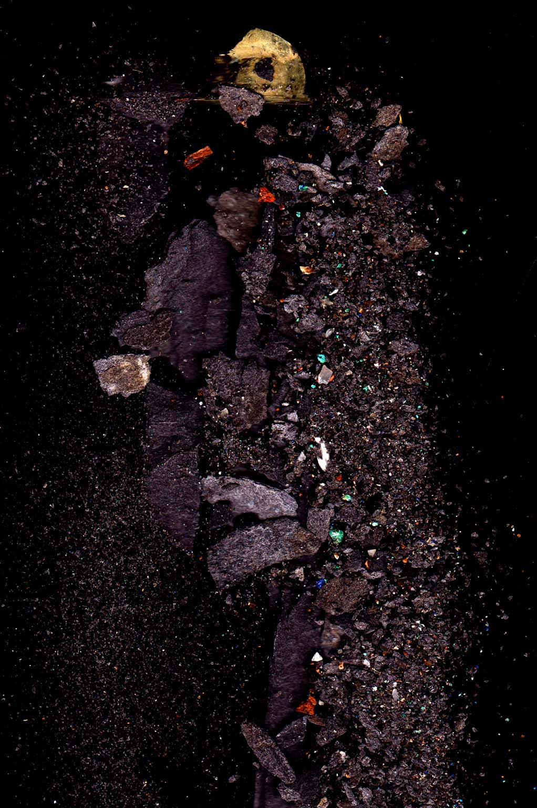
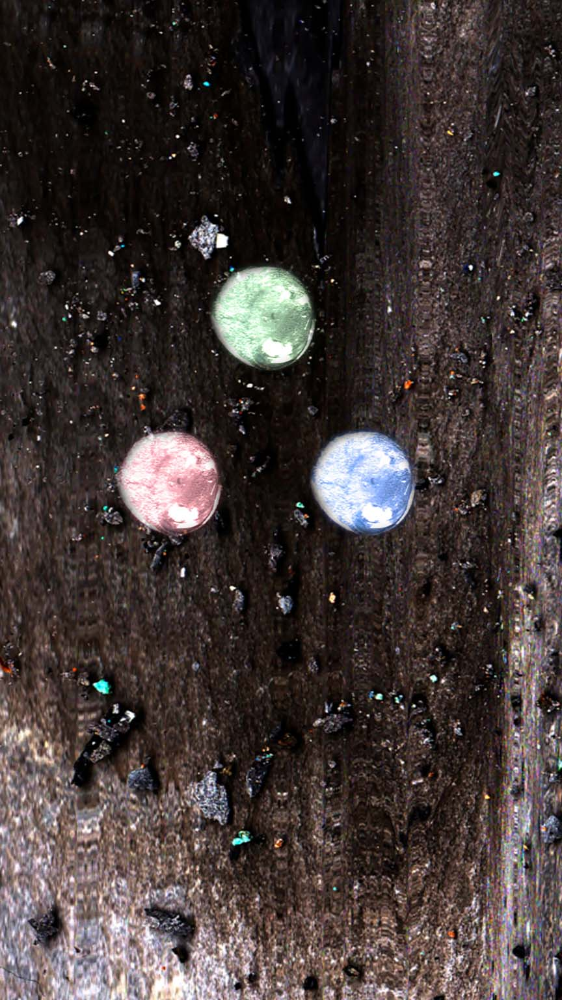
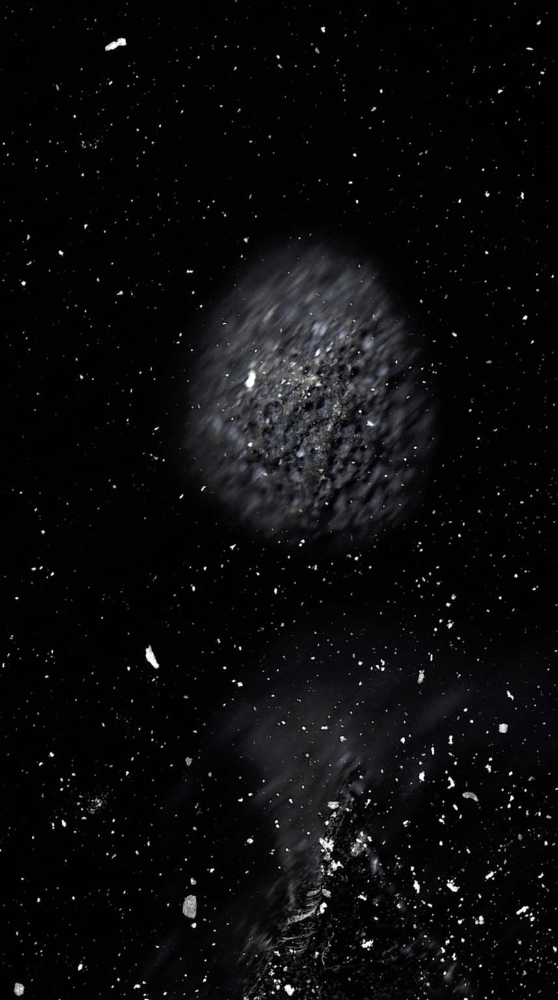
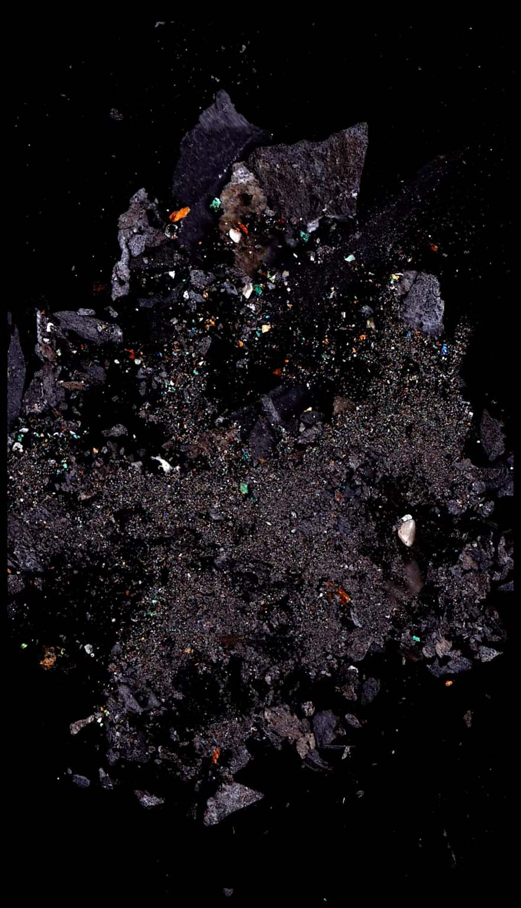